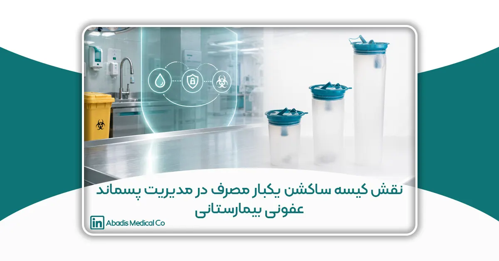
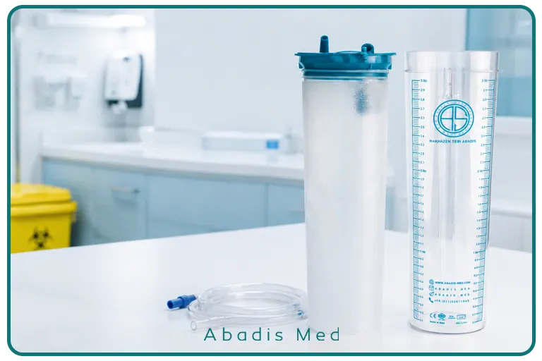

مقدمه
مدیریت پسماندهای عفونی یکی از ارکان اصلی ایمنی در مراکز درمانی است و نقش مهمی در پیشگیری از انتقال عوامل بیماریزا، حفظ سلامت کارکنان و بیماران و همچنین کاهش مخاطرات زیستمحیطی ایفا میکند. بیمارستانها، مراکز جراحی، درمانگاهها و سایر مراکز ارائهدهنده خدمات سلامت، روزانه حجم قابلتوجهی از پسماندهای پزشکی تولید میکنند که بخشی از آنها را پسماندهای مایع عفونی تشکیل میدهد. این پسماندها شامل خون، ترشحات، مایعات حاصل از جراحی، ترشحات دستگاه تنفسی و سایر مایعات بیولوژیکی هستند که در صورت مدیریت نادرست، میتوانند به یکی از مهمترین منابع انتشار آلودگی در محیط درمانی تبدیل شوند.
بر اساس دستورالعملهای سازمان جهانی بهداشت (WHO)، مدیریت پسماندهای مراکز درمانی تنها به مرحله دفع نهایی محدود نمیشود، بلکه از لحظه تولید پسماند آغاز شده و مراحل تفکیک، جمعآوری، نگهداری، حملونقل، بیخطرسازی و دفع نهایی را در بر میگیرد. هرگونه نقص در این چرخه، احتمال انتقال عوامل بیماریزا، آلودگی محیط بیمارستان و افزایش مواجهه شغلی کارکنان با عوامل عفونی را افزایش میدهد. به همین دلیل، استفاده از تجهیزات استاندارد برای مدیریت ایمن پسماندهای پزشکی، بهویژه پسماندهای مایع، به یکی از الزامات مراکز درمانی تبدیل شده است.
در این میان، کیسه ساکشن یکبار مصرف (Disposable Suction Liner) یکی از تجهیزاتی است که نقش آن فراتر از جمعآوری ساده مایعات است. این محصول با ایجاد یک سیستم بسته برای جمعآوری و انتقال مایعات عفونی، احتمال نشت، پاشش، تماس مستقیم و آلودگی متقاطع را کاهش میدهد و به اجرای صحیح فرآیند مدیریت پسماندهای عفونی کمک میکند. در این مقاله، نقش کیسه ساکشن یکبار مصرف را در تمامی مراحل چرخه مدیریت پسماندهای مایع بیمارستانی بررسی میکنیم و نشان میدهیم که چرا امروزه استفاده از این محصول در بسیاری از مراکز درمانی به یک راهکار استاندارد تبدیل شده است.
مدیریت پسماند عفونی بیمارستانی؛ زنجیرهای که از محل تولید آغاز میشود
وقتی از مدیریت پسماندهای عفونی صحبت میشود، بسیاری از افراد تنها به انتقال زبالههای پزشکی یا امحای آنها فکر میکنند. در حالی که بر اساس دستورالعملهای بینالمللی، مدیریت پسماند یک فرآیند پیوسته است که از همان لحظه تولید پسماند آغاز میشود. اگر در نخستین مرحله، یعنی محل تولید، پسماند بهدرستی مدیریت نشود، احتمال بروز خطا در مراحل بعدی نیز افزایش پیدا میکند.
در محیط بیمارستان، پسماندهای عفونی در بخشهای مختلفی مانند اتاق عمل، اورژانس، ICU، CCU، بخشهای بستری، اتاقهای پانسمان و آزمایشگاهها تولید میشوند. هر یک از این بخشها ممکن است انواع متفاوتی از پسماندهای عفونی را تولید کنند؛ از وسایل نوکتیز و برنده گرفته تا پانسمانهای آلوده، نمونههای آزمایشگاهی و مایعات بیولوژیکی.
پسماندهای مایع، به دلیل ماهیت سیال خود، نسبت به بسیاری از انواع دیگر پسماندهای پزشکی خطر بیشتری دارند. خون، ترشحات، مایعات شستوشوی حین جراحی و سایر مایعاتی که توسط سیستم ساکشن جمعآوری میشوند، در صورت نشت یا جابهجایی نامناسب میتوانند سطوح مختلف، تجهیزات پزشکی و حتی افراد حاضر در محیط را آلوده کنند. به همین دلیل، مدیریت این دسته از پسماندها نیازمند استفاده از تجهیزات اختصاصی و رعایت دستورالعملهای مشخص است.
بر اساس توصیههای WHO و CDC، یکی از مهمترین اصول مدیریت پسماندهای پزشکی، کاهش تماس مستقیم افراد با مواد آلوده است. این اصل تنها به مرحله دفع محدود نمیشود، بلکه باید در تمامی مراحل چرخه مدیریت پسماند رعایت شود. استفاده از تجهیزات یکبار مصرف، سیستمهای بسته و ظروف مقاوم در برابر نشت، همگی در راستای اجرای همین اصل طراحی شدهاند.
چرا پسماندهای مایع عفونی یکی از پرخطرترین انواع پسماندهای پزشکی هستند؟
مایعات جمعآوریشده در مراکز درمانی معمولاً ترکیبی از خون، ترشحات بدن، بقایای بافتی، محلولهای شستوشوی جراحی و سایر مواد بیولوژیکی هستند. این مایعات ممکن است حاوی عوامل بیماریزایی مانند ویروسها، باکتریها یا سایر میکروارگانیسمها باشند. به همین دلیل، هرگونه نشت، پاشش یا تماس مستقیم با این مایعات میتواند خطر انتقال آلودگی را افزایش دهد.
برخلاف پسماندهای جامد که معمولاً در کیسهها یا ظروف مشخص جمعآوری میشوند، پسماندهای مایع به دلیل قابلیت جریان یافتن، در صورت مدیریت نادرست میتوانند بهسرعت در محیط منتشر شوند. حتی مقدار کمی از یک مایع آلوده در صورت ریختن روی زمین یا تجهیزات پزشکی، ممکن است باعث آلودگی گسترده محیط شود و فرآیند ضدعفونی را دشوارتر کند.
از سوی دیگر، در بسیاری از اقدامات درمانی، حجم مایعات جمعآوریشده قابل توجه است. در جراحیهای عمومی، ارتوپدی، قلب، مغز و اعصاب یا اعمال لاپاراسکوپی، دستگاههای ساکشن بهطور مداوم برای خارج کردن خون و ترشحات از میدان عمل استفاده میشوند. بنابراین، تجهیزات جمعآوری این مایعات باید علاوه بر ظرفیت مناسب، از نظر ایمنی نیز پاسخگوی شرایط محیطهای درمانی باشند.
یکی دیگر از چالشهای مهم، جابهجایی این مایعات پس از پایان فرآیند درمان است. اگر سیستم جمعآوری بهگونهای طراحی نشده باشد که امکان انتقال ایمن پسماند را فراهم کند، احتمال نشت، پاشش و مواجهه کارکنان با عوامل بیماریزا افزایش پیدا میکند. به همین دلیل، امروزه بسیاری از مراکز درمانی به جای استفاده از سیستمهای سنتی، از کیسههای ساکشن یکبار مصرف استفاده میکنند.
کیسه ساکشن یکبار مصرف چیست و چگونه کار میکند؟
کیسه ساکشن یکبار مصرف، محفظهای انعطافپذیر است که داخل مخزن دستگاه ساکشن قرار میگیرد و مایعات جمعآوریشده را مستقیماً در خود نگه میدارد. این کیسهها معمولاً از پلیمرهای مقاوم در برابر پارگی و نشت تولید میشوند و بسته به نوع طراحی، ممکن است به فیلتر آنتیباکتریال، درپوش آببندی، شیر قطع جریان یا پودر ژلکننده نیز مجهز باشند.
در زمان انجام عمل جراحی یا سایر اقدامات درمانی، مایعات از طریق لوله ساکشن وارد کیسه میشوند. پس از رسیدن به ظرفیت مجاز یا پایان کار، کیسه بدون نیاز به تخلیه محتویات از مخزن خارج شده و مطابق دستورالعمل مدیریت پسماند عفونی، در بستهبندی مناسب قرار گرفته و برای بیخطرسازی یا امحای نهایی ارسال میشود.
تفاوت اصلی این سیستم با مخازن قابل شستوشو در این است که نیازی به تخلیه دستی مایعات وجود ندارد. در نتیجه، یکی از پرخطرترین مراحل مدیریت پسماند، یعنی انتقال مایع از مخزن به محل دفع، حذف میشود. این ویژگی نهتنها احتمال تماس مستقیم کارکنان با پسماندهای عفونی را کاهش میدهد، بلکه از ایجاد آئروسل، پاشش و آلودگی محیط نیز جلوگیری میکند.
در سالهای اخیر، توسعه فناوری در طراحی کیسههای ساکشن باعث شده است این محصولات تنها یک وسیله مصرفی نباشند، بلکه بخشی از سیستم مدیریت ایمن پسماندهای مایع محسوب شوند. وجود فیلترهای هیدروفوبیک، مکانیزمهای ضدسرریز و مواد ژلکننده در برخی مدلها، نشاندهنده حرکت صنعت تجهیزات پزشکی به سمت کاهش هرچه بیشتر خطرات ناشی از پسماندهای عفونی است.
